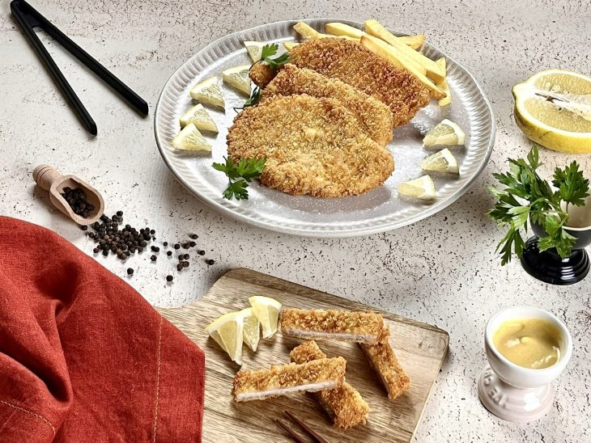
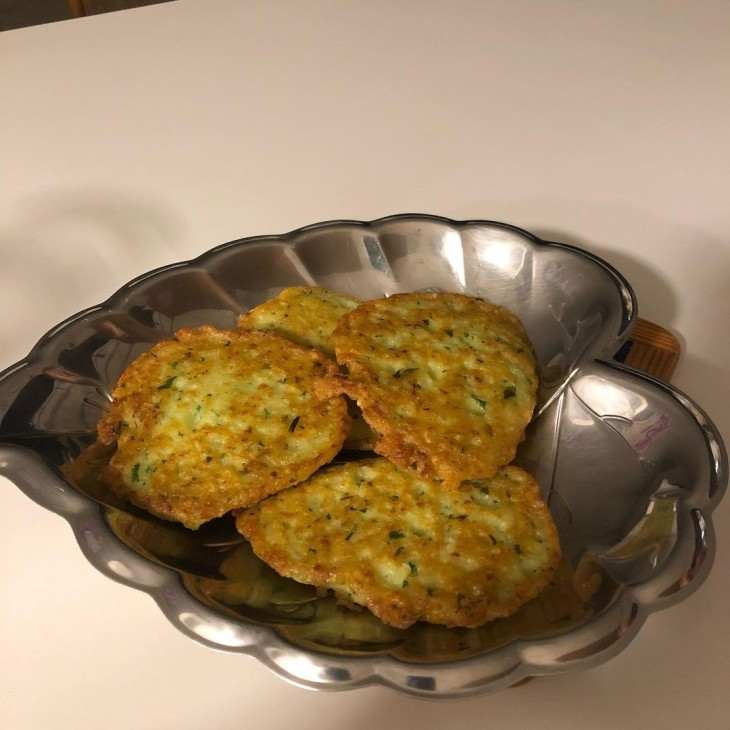
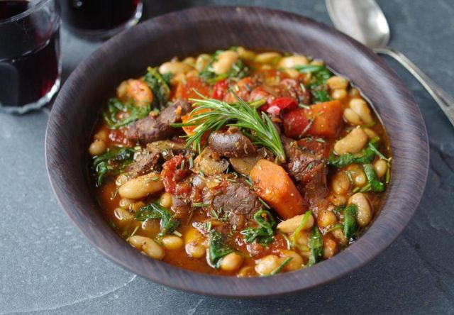
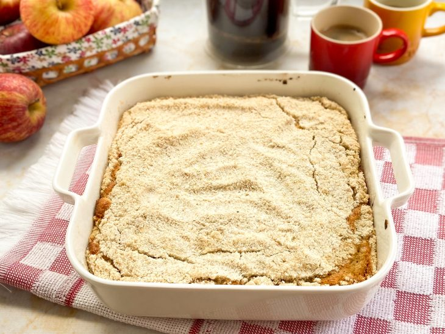

Sobre
Um site de receitas alemãs, feita para a disciplina GCW (Gerenciamento de Conteúdo Web)
Salgados
Schnitzel

Ingredientes:
4 filés de lombo de porco (300 a 500 gramas) 1/2 xícara de chá de farinha de trigo (70 gramas) 1/2 xícara de chá de farinha de rosca ou panko (50 gramas) 1 colher de chá de sal 1/2 colher de chá de pimenta-do-reino 2 ovos (cerca de 100 gramas) 2 colheres de sopa de água (para diluir o ovo) 1 limão-siciliano Folhas de salsinha a gosto 500 ml de óleo vegetal (girassol ou milho)
Modo de Preparo:
Coloque uma camada de plástico filme sobre uma tábua, disponha os filés de lombo por cima e tempere-os com o sal e a pimenta-do-reino;
Cubra os filés de lombo com outra camada de plástico filme e bata, levemente, com um martelo de carne até que os filés fiquem finos, com cerca de 0,5 cm de espessura;
Separe três pratos fundos. Em um quebre o ovo, adicione a água, com um garfo, até que espume. No outro, coloque a farinha de rosca ou panko, e no último prato adicione a farinha de trigo. Tempere cada um com sal e pimenta-do-reino;
Passe os dois lados da carne na farinha de trigo, certificando-se de cobrir bem. Bata com as mãos para retirar o excesso;
Em seguida, mergulhe a carne no ovo batido cobrindo o filé completamente, depois passe o bife na farinha de rosca ou panko, pressionando levemente;
Em uma panela ou frigideira de borda alta, coloque o óleo e leve ao fogo alto para aquecer. A quantidade de óleo deve ser suficiente para que o filé flutue. Quando o óleo estiver quente, abaixe o fogo;
Com cuidado, mergulhe no óleo um bife por vez e frite por cerca de 3 minutos de cada lado, ou até ficar dourado. Mexa um pouco durante a fritura, com uma escumadeira, para que não grude no fundo ou queime;
Com a escumadeira, retire o schnitzel do óleo e transfira para um prato forrado com papel-toalha, para remover o excesso de gordura. Repita o processo com o outro bife;
Coloque o schnitzel em um prato. Corte fatias de limão-siciliano para servir junto e decore os filés com folhas de salsinha. Pode ser acompanhado de batatas assadas ou fritas. Bom apetite!
Kartoffelpuffer

Ingredientes:
4 batatas cruas raladas 1 ovo 30 gramas de mix sem glúten ou farinha de arroz Sal a gosto Noz-moscada a gosto Salsinha picada a gosto 2 gramas de fermento químico em pó (fermento para bolo)
Modo de Preparo:
Em uma tigela, misture as batatas raladas, o ovo e a farinha de arroz ou mix sem glúten.
Tempere com sal, noz-moscada a gosto e adicione a salsinha picada
Acrescente o fermento químico à mistura e mexa bem até obter uma massa homogênea.
Em uma frigideira, aqueça um pouco de óleo.
Com uma colher de sopa, coloque porções da massa na frigideira quente e espalhe para formar panquequinhas.
Frite até que fiquem douradas de ambos os lados, virando cuidadosamente.
Retire do fogo e coloque sobre papel toalha para absorver o excesso de óleo.
Sirva e bom apetite
Kartoffelsuppe
Ingredientes:
800 g de batatas; 2 cebolas; 1 alho-poró; 50 g de manteiga; 1 litro de caldo de carne; sal; 100 g de creme de leite fresco; pimenta-do-reino; 1 colher (chá) de manjerona ou salsinha
Modo de Preparo:
Descascar as batatas e cortar em cubos grandes. Picar bem a cebola. Lavar o alho-poró e cortar em pedaços. Aquecer a manteiga numa panela. Refogar a cebola e o alho-poró. Acrescentar as batatas e o caldo de carne e cozinhar tudo por 20 minutos, com tampa. Espremer as batatas na sopa com um garfo ou bater rapidamente com um mixer. Misturar com o creme de leite e temperar com sal, pimenta e manjerona ou salsinha. Se quiser, acrescente bacon em cubos à sopa
Sopa Do Kaiser Guilherme

Ingredientes:
1 colher de sopa de manteiga ou margarina 1 maço de salsa, coentro e cebolinha 1 cebola grande 1 kilo de batatas 2 tabletes de caldo de carne dissolvidos num litro de água 1 colher de chá de manjericão 1 colher de chá de sal 250 gramas de frios(lingüiças, salsichas, presunto) 1 xícara de chá de creme de leite 2 tomates sem pele e sem sementes 2 cenouras 1 folha de louro Tomilho, sálvia, manjerona, cominho, sal e pimenta
Modo de Preparo:
Picar bem a salsa, o coentro e as cebolinhas. Refogar na manteiga junto com a cebola cortada em pedacinhos. Reservar. A parte descascar e cortar as batatas em cubos. Cozinhá-las no caldo de carne e passar pela peneira ou bater no liquidificador. Adicionar ao refogado e juntar o manjericão. Temperar com sal e pimenta do reino a gosto. Levar ao fogo até ferver. Bater o creme de leite e misturá-lo à sopa. Servir imediatamente.
Bebidas
Gluhwein

Ingredientes:
750 ml de vinho tinto seco; 1 laranja; 1 limão; 10 cravos-da-índia; 3 paus de canela; 60g de açúcar; 2 estrelas de anis.
Modo de Preparo:
Corte a laranja e o limão em rodelas.
Em uma panela grande, misture todos os ingredientes.
Aqueça lentamente a mistura sem deixá-la ferver.
Deixe em fogo baixo por 20 a 25 minutos.
Coe e sirva quente em canecas.
Radler

Ingredientes:
1 xícara de refrigerante de limão/lima 1 xícara de cerveja lager clara
Modo de Preparo:
Adicione o refrigerante de limão a um copo grande de cerveja.
Em seguida, despeje a cerveja lager, inclinando o copo para evitar a formação excessiva de espuma.
Kinderpunsch

Ingredientes:
3 xícaras de água 3 saquinhos de chá de frutas vermelhas 1 xícara de suco de maçã 2 paus de canela 5 cravos 1 limão , orgânico 1 laranja orgânica 1 colher de sopa de açúcar granulado , ou mais a gosto.
Modo de Preparo:
Ferva a água em uma panela média no fogão ou em uma chaleira. Se usar uma chaleira, despeje a água quente na panela assim que estiver quente. Adicione os saquinhos de chá à água quente e deixe em infusão pelo tempo recomendado (geralmente de 5 a 8 minutos). 3 xícaras de água,3 saquinhos de chá de frutas vermelhas
Enquanto o chá está em infusão, lave a laranja e o limão orgânicos e corte-os em rodelas. Caso não encontre limões ou laranjas orgânicos, você também pode descascá-los. 1 limão,1 laranja
Quando o chá estiver pronto, retire os saquinhos de chá. Adicione o suco de maçã, os paus de canela, os cravos-da-índia, as fatias de limão, as fatias de laranja e o açúcar à panela e mexa bem. 1 xícara de suco de maçã,2 paus de canela,1 colher de sopa de açúcar granulado,5 cravos
Cubra a panela com uma tampa e cozinhe em fogo baixo por cerca de 15 minutos. Não deixe a mistura ferver, apenas mantenha-a aquecida para que os sabores se misturem.
Prove o Kinderpunsch e adicione mais açúcar, se necessário. Coe a bebida para remover os cravos e as fatias de fruta. Sirva quente e decore com fatias de laranja ou limão e/ou paus de canela, se desejar.
Doces
Cuca de maçã com aveia

Ingredientes da massa:
1/2 xícara de chá de farinha de trigo (70 gramas) 1/2 xícara de chá de aveia (50 gramas) 1/2 xícara de chá de leite (120 ml) 1/2 xícara de chá de açúcar (100 gramas) 1 colher de sopa de manteiga (ou margarina) 1 ovo 1 colher de chá de fermento químico em pó (fermento para bolo)
Ingredientes do recheio e farofa:
1/2 xícara de chá de farinha de trigo (70 gramas) 1/2 xícara de chá de aveia (50 gramas) 3/4 xícara de chá de açúcar 1 colher de sopa generosa de manteiga (ou margarina) Canela a gosto 1 maçã picada Suco de 1/2 limão
Modo de Preparo:
Junte os ingredientes da cuca de maçã com aveia;
Em uma tigela, coloque a farinha de trigo, a aveia, 1/2 xícara de chá de açúcar, e a manteiga;
Com as pontas dos dedos, misture tudo muito bem até formar uma farofa. Reserve;
Depois, em outra tigela, misture bem todos os ingredientes da massa com um fouet;
Unte uma forma de 20x20x5 cm com manteiga, despeje a massa e reserve;
Recheie com a maçã misturada com o suco de limão, o restante do açúcar e a canela a gosto;
Polvilhe a farofa por cima do recheio e asse em forno preaquecido a 180ºC por cerca de 35 minutos;
Sirva com um café quentinho passado na hora. Bom apetite!
Eiskaffe
Ingredientes:
café preto 2 bolas de sorvete de baunilha chantilly , para decorar Raspas/granulados de chocolate ou cacau em pó para decorar; opcional
Modo de Preparo:
Prepare café preto suficiente para o copo que você vai usar. Após o preparo, deixe o café esfriar completamente. Uma maneira rápida de fazer isso é despejar o café quente em uma tigela e, em seguida, encher a pia da cozinha com água bem fria e colocar a tigela com o café dentro. Seu café deverá estar frio o suficiente em cerca de 15 minutos.
Se você preparar o chantilly em casa (e não usar um creme de chantilly de garrafa), pode aproveitar esse "tempo de resfriamento do café" para bater o creme com uma batedeira elétrica.
Coloque duas bolas de sorvete de baunilha no copo e complete com café gelado. Finalize com chantilly (a gosto!). Você pode decorar com granulado de chocolate ou raspas de chocolate (rale uma barra de chocolate amargo em um ralador). Se desejar, polvilhe também um pouco de cacau em pó.
Spekulatius
Ingredientes:
1 kg de trigo 660 g de açúcar 4 ovos inteiros 500 gr de manteiga 3 colheres de sobremesa de essência de baunilha 2 colheres de sobremesa de cravo em pó 1 colher de sobremesa de noz moscada ralada 3 colheres de sobremesa de canela em pó 200 gr de amêndoas trituradas 2 colheres de fermento em pó.
Modo de Preparo:
Coloque numa vasilha o trigo, o açúcar e todos os ingredientes seos. Misture tudo e acrescente os ovos e a manteiga bem gelada. Forme uma farofa e em seguida amasse rápido. Abra a massa com um rolo sobre papel manteiga e recorte as forminhas. Coloque no tabuleiro untado ou forrado com papel manteiga, mantendo uma certa distancia entre eles para que ao crescer, não grudem uns nos os outros. Deixar esfriar um pouco no tabuleiro para ganharem firmeza. Depois podem ser decorados a gosto ou guardados puros em potes bem fechados ou sacos plásticos para durarem pelo menos três meses.